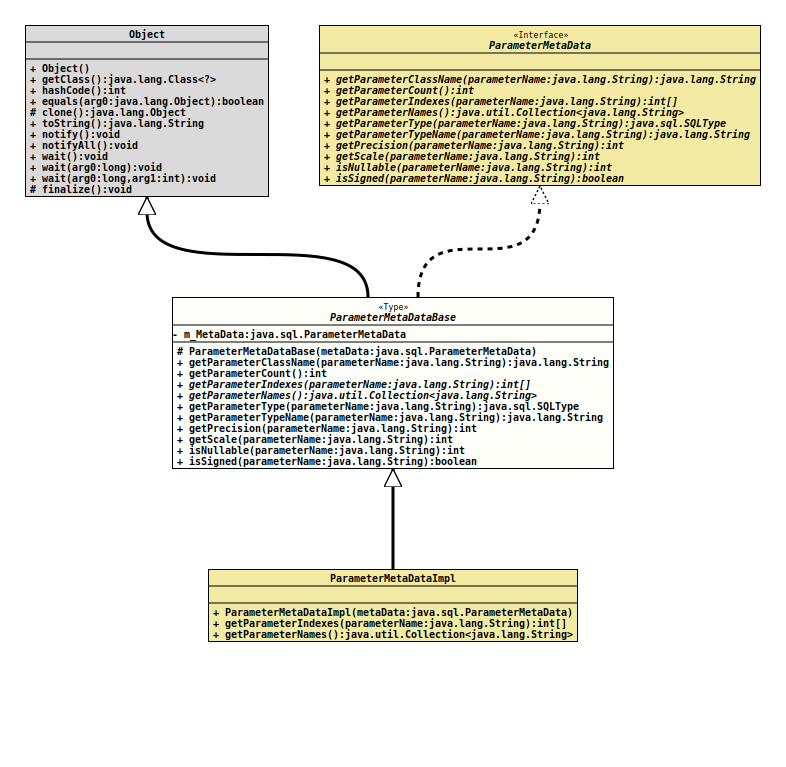

Class ParameterMetaDataBase
- All Implemented Interfaces:
ParameterMetaData
- Direct Known Subclasses:
EnhancedPreparedStatementBase.ParameterMetaDataImpl
ParameterMetaData
that is used by
EnhancedPreparedStatement.- Author:
- Thomas Thrien (thomas.thrien@tquadrat.org)
- Version:
- $Id: ParameterMetaDataBase.java 1020 2022-02-27 21:26:03Z tquadrat $
- Since:
- 0.1.0
- UML Diagram
-

UML Diagram for "org.tquadrat.foundation.sql.internal.ParameterMetaDataBase"
{kind=link}
-
Field Summary
Fields -
Constructor Summary
ConstructorsModifierConstructorDescriptionprotectedParameterMetaDataBase(ParameterMetaData metaData) Creates a new instance ofParameterMetaDataBase. -
Method Summary
Modifier and TypeMethodDescriptionfinal StringgetParameterClassName(String parameterName) Retrieves the fully-qualified name of the Java class whose instances should be passed to the methodEnhancedPreparedStatement.setObject(String, Object).final intRetrieves the number of parameters in theEnhancedPreparedStatementobject for which thisParameterMetaDataobject contains information.abstract int[]getParameterIndexes(String parameterName) Retrieves the parameter indexes for the given parameter name.abstract Collection<String> Retrieves the names of the parameters in theEnhancedPreparedStatementobject for which thisParameterMetaDataobject contains information.final SQLTypegetParameterType(String parameterName) Retrieves the designated parameter's SQL type.getParameterTypeName(String parameterName) Retrieves the designated parameter's database-specific type name.final intgetPrecision(String parameterName) Retrieves the designated parameter's specified column size.final intRetrieves the designated parameter's number of digits to right of the decimal point.final intisNullable(String parameterName) Retrieves whetherNULLvalues are allowed in the designated parameter.booleanRetrieves whether values for the designated parameter can be signed numbers.
-
Field Details
-
m_MetaData
The wrapped metadata instance.
-
-
Constructor Details
-
ParameterMetaDataBase
Creates a new instance ofParameterMetaDataBase.- Parameters:
metaData- The wrapped metadata instance.
-
-
Method Details
-
getParameterClassName
Retrieves the fully-qualified name of the Java class whose instances should be passed to the methodEnhancedPreparedStatement.setObject(String, Object).- Specified by:
getParameterClassNamein interfaceParameterMetaData- Parameters:
parameterName- The name of the parameter, prefixed by a colon.- Returns:
- The fully-qualified name of the class in the Java programming
language that would be used by the method
EnhancedPreparedStatement.setObject()to set the value in the specified parameter. This is the class name used for custom mapping. - Throws:
SQLException- A database access error occurred.
-
getParameterCount
Retrieves the number of parameters in theEnhancedPreparedStatementobject for which thisParameterMetaDataobject contains information.- Specified by:
getParameterCountin interfaceParameterMetaData- Returns:
- The number of parameters.
- Throws:
SQLException- A database access error occurred.
-
getParameterIndexes
Retrieves the parameter indexes for the given parameter name.- Specified by:
getParameterIndexesin interfaceParameterMetaData- Parameters:
parameterName- The name of the parameter, prefixed by a colon.- Returns:
- The parameter indexes for this parameter name.
- Throws:
SQLException- The given parameter name is not defined.
-
getParameterNames
Retrieves the names of the parameters in theEnhancedPreparedStatementobject for which thisParameterMetaDataobject contains information.- Specified by:
getParameterNamesin interfaceParameterMetaData- Returns:
- The names of the parameters.
-
getParameterType
Retrieves the designated parameter's SQL type.
Different from
ParameterMetaData.getParameterType(int)will this method return an instance ofSQLTypefor the type, and not an integer.If the numerical value (as defined in
Types) is required, it can be obtained like this:… int sqlType = getParameterType( param ).getVendorTypeNumber().intValue(); …- Specified by:
getParameterTypein interfaceParameterMetaData- Parameters:
parameterName- The name of the parameter, prefixed by a colon.- Returns:
- The SQL type.
- Throws:
SQLException- A database access error occurred.- See Also:
-
getParameterTypeName
Retrieves the designated parameter's database-specific type name.- Specified by:
getParameterTypeNamein interfaceParameterMetaData- Parameters:
parameterName- The name of the parameter, prefixed by a colon.- Returns:
- The name of the type used by the database. If the parameter type is a user-defined type, then a fully-qualified type name is returned.
- Throws:
SQLException- A database access error occurred.
-
getPrecision
Retrieves the designated parameter's specified column size.
The returned value represents the maximum column size for the given parameter. For numeric data, this is the maximum precision. For character data, this is the length in characters. For datetime data types, this is the length in characters of the String representation (assuming the maximum allowed precision of the fractional seconds component). For binary data, this is the length in bytes. For the ROWID datatype, this is the length in bytes. 0 is returned for data types where the column size is not applicable.
- Specified by:
getPrecisionin interfaceParameterMetaData- Parameters:
parameterName- The name of the parameter, prefixed by a colon.- Returns:
- The precision.
- Throws:
SQLException- A database access error occurred.
-
getScale
Retrieves the designated parameter's number of digits to right of the decimal point.
0 is returned for data types where the scale is not applicable.
- Specified by:
getScalein interfaceParameterMetaData- Parameters:
parameterName- The name of the parameter, prefixed by a colon.- Returns:
- The scale.
- Throws:
SQLException- A database access error occurred.
-
isNullable
Retrieves whether
NULLvalues are allowed in the designated parameter.If the parameter with the the given name is used multiple times in the underlying
PreparedStatement, this method returns 2 when the nullability status is not the same for all uses.- Specified by:
isNullablein interfaceParameterMetaData- Parameters:
parameterName- The name of the parameter, prefixed by a colon.- Returns:
- The nullability status of the given parameter; one of
ParameterMetaData.parameterNoNulls,ParameterMetaData.parameterNullable, orParameterMetaData.parameterNullableUnknown. - Throws:
SQLException- A database access error occurs
-
isSigned
Retrieves whether values for the designated parameter can be signed numbers.- Specified by:
isSignedin interfaceParameterMetaData- Parameters:
parameterName- The name of the parameter, prefixed by a colon.- Returns:
trueif a value can be a signed number,falseotherwise.- Throws:
SQLException- A database access error occurred.
-